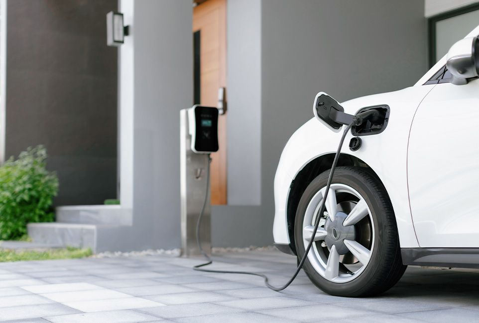
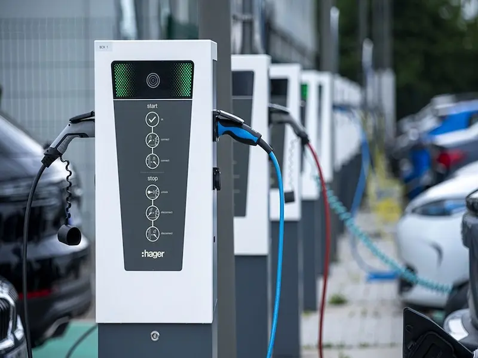
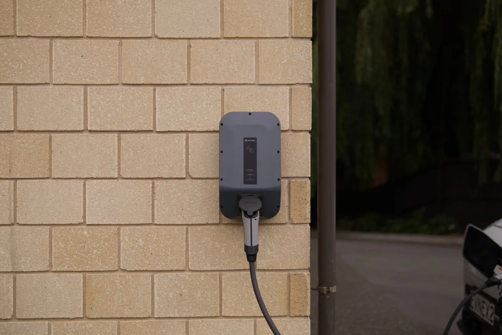

Habitat individuel
Pour les particuliers
Rechargez votre véhicule depuis votre garage ou votre place privative. Solution clé en main : conseil, matériel et installation.
Découvrir l'offreC'est dans le Val-d'Oise, depuis notre base de Sarcelles, qu'IRV'OHM a réalisé ses toutes premières installations. Vallée de Montmorency, bords de Seine, secteur de Roissy ou confins de l'Isle-Adam : nos techniciens connaissent chaque commune du département et interviennent avec un délai réduit puisque nous sommes sur place.
+500 installations
réalisées en France
Photo : P.poschadel (CC BY-SA 4.0)
C'est dans le Val-d'Oise, depuis notre base de Sarcelles, qu'IRV'OHM a réalisé ses toutes premières installations. Vallée de Montmorency, bords de Seine, secteur de Roissy ou confins de l'Isle-Adam : nos techniciens connaissent chaque commune du département et interviennent avec un délai réduit puisque nous sommes sur place.
Devis gratuit sous 48h et installation réalisée dans les 15 jours. Bornes intelligentes jusqu'à 22 kW, adaptées à la puissance de votre compteur.
jusqu'à 22 kWInstallations certifiées IRVE P1-P2 par nos experts. Protection contre les surtensions et contrôle thermique intégré, conformes NF C 15-100.
norme NF C 15-100TVA réduite à 5,5 % et programme ADVENIR pour réduire le coût de votre installation. Nous vous accompagnons dans toutes vos démarches.
TVA 5,5 % · ADVENIRNotre ville d'attache, autour des Flanades.
Entre Seine et habitat mixte.
Ville nouvelle et copropriétés récentes.
Ville historique et administrative.
Un territoire tourné vers l'entreprise.
Juste à côté de notre base.
À deux pas de Sarcelles.
Commune pavillonnaire du Val-d'Oise.
Entre centre ancien et zones d'activité.
Dans la vallée de Montmorency.
Ville résidentielle au pied de sa forêt.
Exigence et discrétion.
Dans la vallée de Montmorency.
Carrefour résidentiel bien desservi.
Une des grandes communes du secteur.
Entre Seine et pavillons.
Entre forêt et résidentiel.
Calme et proximité.
Au pied de la forêt de Montmorency.
Aux confins du Val-d'Oise.
Sur les buttes du Parisis.
Ville pavillonnaire des coteaux.
Du pavillon à l'entreprise.
Cadre résidentiel du Val-d'Oise.
Aux portes de la forêt.

Rechargez votre véhicule depuis votre garage ou votre place privative. Solution clé en main : conseil, matériel et installation.
Découvrir l'offre
Valorisez vos parkings, offrez un service à vos clients et électrifiez votre flotte de véhicules professionnels.
Solutions businessDe la prise de contact à la mise en service, nous encadrons chaque étape de votre projet dans le Val-d'Oise. Voici comment se déroule concrètement une installation avec IRV'OHM.

Vous nous contactez, nous étudions votre projet — type de logement, puissance disponible, distance au tableau électrique — et vous recevez un devis détaillé et sans engagement.
Nos techniciens IRVE vérifient la faisabilité : puissance du compteur, distance de raccordement, configuration du garage ou du parking, et montage du dossier de copropriété si nécessaire.
Pose de la wallbox, raccordement au tableau électrique et tests de sécurité, réalisés dans le respect de la norme NF C 15-100 — généralement sous 15 jours après validation du devis.
Votre borne est activée et testée avec votre véhicule. Vous recevez l'attestation de conformité nécessaire pour débloquer la prime ADVENIR et la TVA réduite à 5,5 %.
IRV'OHM installe des bornes de recharge dans 25 villes dans le Val-d'Oise : Sarcelles, Argenteuil, Cergy, Pontoise, Roissy-en-France, Garges-lès-Gonesse, Villiers-le-Bel, Arnouville, Gonesse, Saint-Brice-sous-Forêt, Montmorency, Enghien-les-Bains, Eaubonne, Ermont, Franconville, Herblay-sur-Seine, Taverny, Saint-Leu-la-Forêt, Domont, L'Isle-Adam, Cormeilles-en-Parisis, Sannois, Saint-Ouen-l'Aumône, Deuil-la-Barre et Soisy-sous-Montmorency.
Le prix dépend de la puissance de la borne (de 7 à 22 kW), de la distance au tableau électrique et de la configuration du logement — maison individuelle ou copropriété. Après TVA réduite à 5,5 % et prime ADVENIR, IRV'OHM vous remet un devis gratuit et détaillé sous 48h, quelle que soit la ville dans le Val-d'Oise.
IRV'OHM est un installateur de bornes de recharge certifié IRVE, basé à Sarcelles dans le Val-d'Oise, intervenant dans le Val-d'Oise et dans toute l'Île-de-France. Nous gérons votre projet de A à Z : étude, pose de la wallbox, raccordement électrique et mise en service.
Vous pouvez cumuler la TVA à 5,5 % et la prime ADVENIR pour financer une partie de votre borne de recharge, où que vous soyez dans le Val-d'Oise. IRV'OHM vous accompagne dans le montage complet de votre dossier d'aides.
Oui. Grâce au droit à la prise, tout occupant d'un immeuble en copropriété dans le Val-d'Oise peut faire installer une borne de recharge sur son emplacement de parking. IRV'OHM prend en charge le montage du dossier technique à soumettre au syndic, jusqu'à la mise en service de votre point de charge.
Le bon choix dépend de votre véhicule et de la puissance disponible sur votre compteur : une borne 7,4 kW en monophasé convient à la majorité des véhicules particuliers, tandis qu'une borne 11 ou 22 kW en triphasé permet une recharge plus rapide si votre installation électrique le permet. IRV'OHM vous conseille sur la puissance adaptée dans le Val-d'Oise lors du devis gratuit. Pour en savoir plus, consultez notre article 7 kW ou 22 kW, quelle puissance choisir ?
Nos techniciens experts interviennent sur les 25 villes dans le Val-d'Oise. De l'étude de faisabilité jusqu'à la mise en service.
Choisissez votre commune pour préparer le raccordement de votre place et présenter votre projet de recharge. Les pages ci-dessous proposent des points à examiner selon différents usages du stationnement.
Noms, codes et centres communaux : référentiel de l’API Géo. Les communes proches sont proposées à partir de leurs centres géographiques ; les adresses et accès précis restent à indiquer pour l’étude.